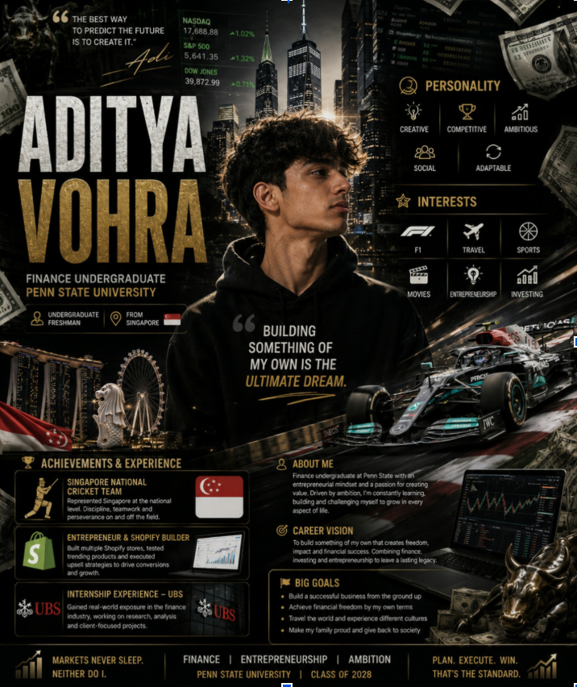

Four creative experiments, each using AI differently. Open the linked artifacts to see the work behind the portfolio.
Project 01 · TextGen
My AI Personal Profile
I used ChatGPT to develop and personalize a profile about my background, interests, and ambitions. The process highlighted the difference between generic AI writing and writing shaped by personal details.
 Tool: ChatGPT ↗
Tool: ChatGPT ↗
Project 02 · ImageGen
Monaco Grand Prix
I compared three AI-generated interpretations of the famous Fairmont Hairpin, using the same racing scene prompt across ChatGPT, Canva AI, and Ideogram.
Image 1: ChatGPT

Image 2: Canva AI

Image 3: Ideogram

Tools: ChatGPT · Canva AI · Ideogram
Project 03 · VoiceGen
Tokyo Street-Racing Anthem
I used Suno AI to create a high-energy Japanese hip-hop racing track and an orchestral cover, exploring how a change in musical style can change the mood of a song.
Add the Google Drive link to Version 1 below.
Listen to orchestral version ↗
Tool: Suno AI
Project 04 · VideoGen
The Last Lap
Two versions of a final-lap racing story: a 2D animation and an anime-inspired version. Both feature a last-corner overtake, but differ in visual style and presentation.
Add the Google Drive links for both 35-second videos here.
Reported tools: Magic Hour AI and ChatGPT. Confirm the actual video-generation models before final submission.